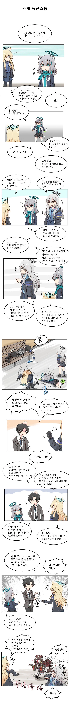
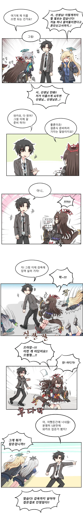
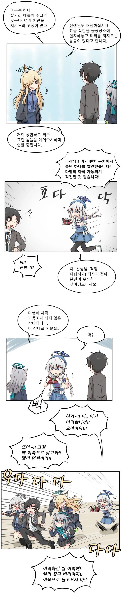
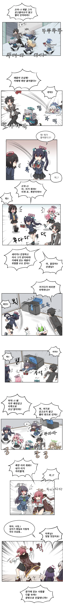
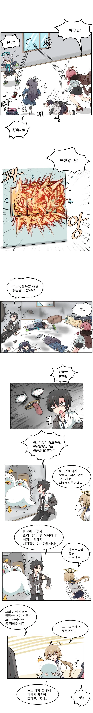
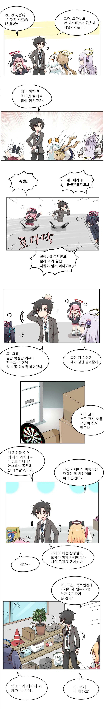
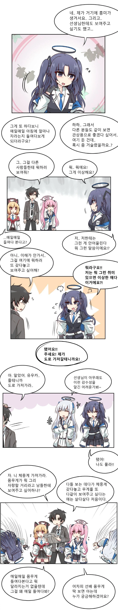
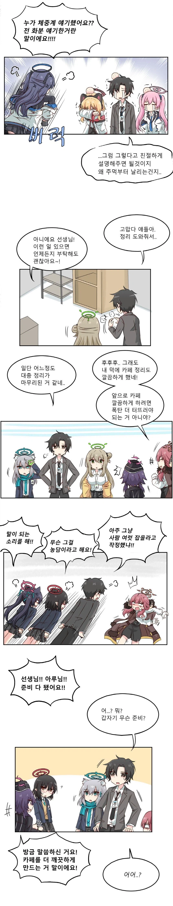
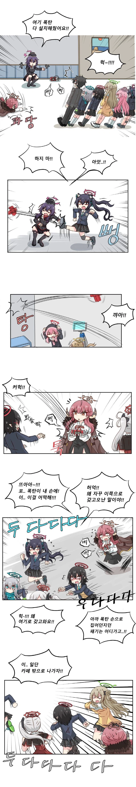
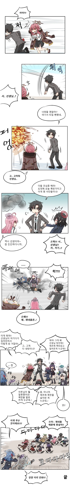

유모아 스타일이 90년대야
ㅈㄴ 옛날 만화 스타일이네 ㅋㅋㅋ
90 00년대 스타일 개그네 ㅋㅋㅋ
90년대 학습만화 스타일이라고 적을랬더니 이미 있네
90년대 감성
아오 정신사나워 ㅋㅋㅋㅋㅋ
뎃 왜 눈물이...?
ㅠ 이게 언제 감성이야ㅠ
정신없는게 딱 옛날에 무술소년 꼬망 스타일이네 ㅋㅋㅋ
ㅋㅋㅋㅋㅋㅋㅋㅋ
사이버데몬 3호 추억이다. 오랜만에 블로그 가니 블아, 니케 만화 그렸었네. 그마저도 작년이 최근이고 소식이...
오 익숙한 90년대맛
ㅋㅋㅋㅋㅋㅋㅋ
진짜 옛날 스타일 개그 ㅋㅋㅋㅋㅋㅋ
이거 왜 ts안하냐
이거 보니까 어릴적 도서관 아동용 선반에
그리스로마신화 맹꽁이서당 뚱딴지 심술통 메이플스토리 why ~살아남기 옆에 블루아카이브도 꽂혀있었던 거 같다
ㅋㅋㅋㅋㅋ
블아가 90년대에 출시했다면 이런 느낌이었을 것 같다
이거이거 상당히 구수한 옛날 전통방식 코미디가 아닌가
진짜 올드하네 ㅋㅋㅋㅋ
옛날만화책 꼬망 보는 느낌이네
사이버데몬 오랜만이네..
리액션이 8090스타일인뎈ㅋㅋㅋㅋㅋㅋㅋㅋㅋ?
00년대 학습만화같네 ㅋㅋㅋㅋㅋㅋㅋㅋㅋㅋㅋ